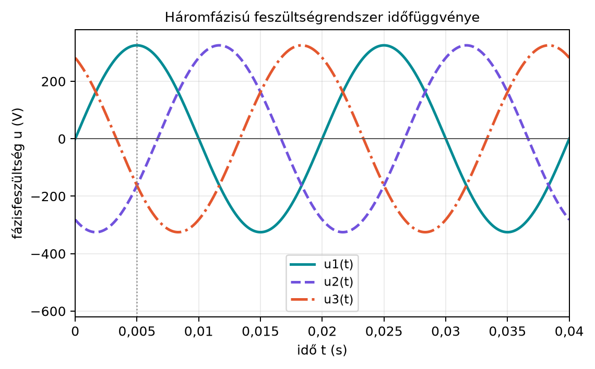
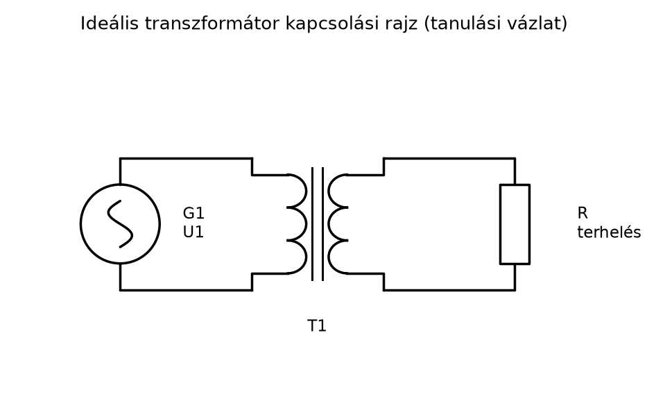

Egy korszerű hibrid vagy elektromos járműben a nagyfeszültségű akkumulátor egyenfeszültségéből a hajtómotor csak úgy kaphat váltakozó feszültséget, ha előtte valamilyen átalakító rendezi át a feszültségszinteket és a fázisokat. A műhelyben a hibakereséshez nem elég annyit tudni, hogy „az inverter átalakít”; érteni kell a transzformátor elvét, a többfázisú rendszer felépítését és a forgó mágneses mező keletkezését, mert ezen alapul a gépjármű-generátor, a HV-hajtómotor és sok töltőáramkör.
Képzelj el egy zárt vasmagot, amelyen két tekercs van. Az egyik tekercsre (primer) váltakozó feszültséget kapcsolunk, a másik tekercsen (szekunder) pedig mérjük a kimenő feszültséget. Ha a két tekercs menetszáma különböző, a kimenő feszültség is arányosan eltér; ugyanakkor a két oldal teljesítménye ideális esetben megegyezik, mert energiát nem termelünk. Ugyanez az elv jelenik meg a gyújtótekercsben, a hibrid jármű DC/DC átalakítójában és a hálózati töltőkészülékben, csak ott a váltakozás frekvenciája és a vezérlés módja más.
Hasonlóan szemléletes a háromfázisú rendszer: három, egymástól térben 120°-kal eltolt tekercsben három, időben 120°-kal eltolt szinuszos feszültség keletkezik. Ha a három tekercsbe háromfázisú áramot vezetünk, az eredő mágneses mező állandó nagyságú, és körbeforog a vasmagban. Ez a forgó mező hajtja a villamos motorokat, és ez teszi lehetővé, hogy a gépjármű generátora háromfázisú váltakozó feszültséget állítson elő, amit aztán egyenirányítunk.
Definíció. A transzformátor két vagy több tekercsből álló villamos gép, amely a tekercsek közötti mágneses csatolás révén váltakozó feszültséget és áramot alakít át, jellemzően a feszültségszintet változtatja meg, a frekvencia változtatása nélkül.
Definíció. Az ideális transzformátor olyan modell, amelyben nincs tekercs-ellenállás, nincs szórt fluxus, a vasmag permeabilitása végtelen, és nincs vasveszteség. Ekkor a primer és szekunder feszültség aránya kizárólag a menetszámok arányától függ:
Itt a transzformátor áttétele. Az ideális transzformátor teljesítményt nem termel, ezért a látszólagos teljesítmények megegyeznek, amiből az áramokra:
Az áttétel reciproka sokszor kényelmesebb: a menetszám-csökkentő transzformátornál a feszültség csökken, de az áram nő.
Összefüggés. A valóságos transzformátorban a primer oldali feszültség a következő részekre bontható: a hasznos fluxust előállító indukált feszültségre, a primer tekercs ellenállásán eső feszültségre és a szórt fluxus által indukált feszültségre. A szekunder oldalon hasonló feszültségesések jelentkeznek. Emiatt terheléskor a kapocsfeszültség a névlegesnél kisebb lehet, ezt százalékos rövidzárlati feszültségként adják meg (ellenőrizendő: a gyártói adatlap).
Definíció. A háromfázisú feszültségrendszer három, azonos frekvenciájú és amplitúdójú, de egymáshoz képest 120°-kal eltolt fázisú szinuszos feszültségből áll. Ha a három fázisfeszültség nagysága egyenlő, és egymástól pontosan 120°-ra van, a rendszert szimmetrikusnak nevezzük.
A következő diagram a három fázisfeszültség időfüggvényét mutatja:

Az ábrán jól látható, hogy amikor az egyik fázis feszültsége éppen csúcsértéken van, a másik kettő negatív vagy pozitív értéken, de összegük minden időpillanatban nulla, ha a rendszer szimmetrikus és a fázisok terhelése egyenlő.
Összefüggés. Csillagkapcsolásban a vonali (két fázisvezető közötti) feszültség a fázisfeszültség -szorosa:
és a vonali áram megegyezik a fázisárammal: . Háromszögkapcsolásban a vonali feszültség egyenlő a fázisfeszültséggel (), a vonali áram pedig a fázisáram -szorosa: .
A háromfázisú hatásos teljesítmény mindkét kapcsolásban:
ahol a fázisfeszültség és a fázisáram közötti szög. A látszólagos teljesítmény , a meddő teljesítmény .
A transzformátor lényege a mágneses csatolás. A primer tekercsre kapcsolt váltakozó feszültség váltakozó áramot hoz létre, amely a vasmagban váltakozó mágneses fluxust gerjeszt. Ez a fluxus a szekunder tekercsben indukál feszültséget. Az indukált feszültség nagysága a Faraday-törvény szerint arányos a menetszámmal és a fluxus időbeli változásával.
Üresjárásban a szekunder kapcsok nyitva vannak, ezért a szekunder áram nulla. A primer áram ilyenkor csupán az üresjárási (mágnesezési) áram, amely a fluxust fenntartja, és jellemzően a névleges áram néhány százaléka (ellenőrizendő: típustól függően). A primer kapocsfeszültség és az indukált feszültség közel egyenlő, mert a primer tekercs ellenállásán és a szórt fluxuson eső feszültség kicsi.
Terheléskor a szekunder áram a terhelő impedancián keresztül folyik. A szekunder áram mágneses tere a fluxust csökkenteni igyekszik, ezért a primer áram megnő, hogy a fluxus közel változatlan maradjon. Ez az egyensúly magyarázza, hogy a transzformátor teljesítménye a primer és szekunder oldalon közel azonos, és a primer oldal „követi” a terhelést.
A valóságos transzformátor veszteségei: - rézveszteség: a tekercsek ellenállásán keletkező hő, ; - vasveszteség: hiszterézis- és örvényáram-veszteség a vasmagban; - szórt fluxus: a fluxus egy része nem kapcsolódik mindkét tekercshez, ez feszültségesést okoz.
A hatásfok:
A járműtechnikában a transzformátor gyakran nem 50 Hz-es hálózati frekvencián működik, hanem kapcsolóüzemű átalakítóban, néhány tíz vagy több száz kHz-es frekvencián. Ekkor a vasmag kisebb lehet, az átalakító hatásfoka pedig jellemzően 90% feletti (ellenőrizendő: a gyártói adatok szerint).
Gyújtótekercs. A hagyományos vagy teljesen elektronikus gyújtású Otto-motorban a gyújtótekercs két tekercset tartalmaz közös vasmagon. Az áram megszakítása vagy bekapcsolása gyors fluxusváltozást okoz, ami a szekunder tekercsen több ezer voltos feszültséget indukál. Ez nem hálózati transzformátor, hanem kapcsolóüzemű induktív elem, de a menetszámviszony és a mágneses csatolás ugyanúgy értendő, mint a transzformátornál. A primer és szekunder tekercs ellenállását multiméterrel mérhetjük, de a pontos kiértékelés a gyártói adatok alapján történik (ellenőrizendő: gyújtótekercs ellenállása típusonként eltérő).
A rajzon a ceruzatekercs a gyertyára ül: a csatlakozón (①) érkezik a táp, az ECU vezérlőjele és a test, a beépített végfok (②, ha van) kapcsolja a kevés menetű primer tekercset (③); a sok menetű szekunder tekercs (④) ugyanazon a lemezelt vasmagon (⑤) ül, a műgyanta kiöntés (⑥) szigeteli, a nagyfeszültség a rugós érintkezőn (⑦) és a gumi gyertyapipán (⑧) át jut a gyertyára. Az interaktív változat a primer áram megszakítását és a szekunder feszültségcsúcsot is lejátssza.
DC/DC átalakító. Hibrid és elektromos járműben a nagyfeszültségű akkumulátor feszültségét egy DC/DC átalakító csökkenti a 12 V-os fedélzeti hálózat szintjére. A kapcsolóüzemű átalakítóban a bemeneti egyenfeszültséget nagyfrekvenciás váltakozó feszültséggé alakítják, transzformátorral leválasztják és átalakítják, majd egyenirányítják és szűrik. Ez galvanikus leválasztást is biztosít, ami fontos a nagyfeszültségű rendszer és a 12 V-os hálózat között.
Töltőkészülék. Az elektromos jármű beépített vagy külső töltője a hálózati váltakozó feszültséget egyenirányítja, majd kapcsolóüzemű fokozatban a kívánt egyenfeszültségre alakítja. A transzformátor itt a hálózati oldal és a járműoldal közötti leválasztást és a feszültség illesztését biztosítja (a részletekhez lásd Töltés: AC és DC töltés, töltőcsatlakozók, töltési módok).
Egy egyszerű kapcsolási rajz a transzformátor elvi működésére:

A rajz alapállapotban mutatja az ideális transzformátort: a primer oldalon a váltakozó forrás, a szekunder oldalon az ellenállás-terhelés. A transzformátor szimbólum bal oldala a primer, jobb oldala a szekunder tekercs. A valóságban a két tekercs ugyanazon a vasmagon helyezkedik el, és polaritásukat a kapocsjelölés, illetve a pontozott jelölés adja meg.
A háromfázisú rendszerben három fázisvezető és rendszerint egy nulla-, illetve védővezető van. A három fázis feszültségeit egymáshoz képest 120°-kal eltolják. Ha a fázisokat egyenlő terhelés éri, a nulla vezetőn nem folyik áram, ezért a nulla elhagyható. Az ipari hálózatban a fázisfeszültség (fázis és nulla között) 230 V, a vonali feszültség 400 V (ellenőrizendő: a hálózati feszültségtűrésre vonatkozó szabvány). A járműgenerátorokban a feszültség jóval kisebb, jellemzően a 12 V-os rendszerben a fázisfeszültség effektív értéke néhány volt, a vonali feszültség ennek megfelelően -szoros.
A háromfázisú rendszer előnye, hogy azonos teljesítményhez kisebb vezeték-keresztmetszet is elég, a pillanatnyi teljesítmény pedig állandó, ha a terhelés szimmetrikus. Egyfázisú teljesítménynél a pillanatnyi teljesítmény a frekvencia kétszeresével lüktet, míg háromfázisú rendszerben a három fázis teljesítménye összege állandó, ami kisebb rezgést és egyenletesebb nyomatékot eredményez a villamos gépekben.
Láncolás. A három fázistekercset nem hat külön vezetővel kötjük a fogyasztóhoz, hanem összekapcsoljuk (láncoljuk): csillagkapcsolásban három fázisvezető és szükség esetén a nulla (szimmetrikus terhelésnél a nulla elhagyható), háromszögkapcsolásban három vezeték elég. Ez a láncolt háromfázisú rendszer; a két kapcsolást a következő alfejezet tárgyalja.
Az áramkiszorítás (skin-hatás, „bőrhatás”) más jelenség: nagy frekvencián az áram a vezető felületén sűrűsödik, ezért a vezeték ellenállása a frekvenciával nő. Emiatt a kapcsolóüzemű átalakítók tekercseit sok vékony, egymástól szigetelt szálból sodrott (litze) huzalból készítik (ellenőrizendő: a kapcsolóüzemű átalakító tervezési adatai).
A háromfázisú tekercsek kapcsolhatók csillagba (Y) vagy háromszögbe (Δ). Csillagkapcsolásban minden fázistekercs egyik vége közös csomópontba fut, a másik vége a fázisvezetőre. A fázisfeszültség a fázisvezető és a csillagpont között mérhető, a vonali feszültség két fázisvezető között. Háromszögkapcsolásban a tekercsek zárt hurkot alkotnak, a csomópontokra csatlakoznak a fázisvezetők. A vonali feszültség megegyezik a fázistekercs feszültségével, a vonali áram viszont két fázistekercs áramának vektori különbsége, ezért -szoros.
A gépjármű-generátorok állórész tekercselése gyakran csillagba van kötve, mert a diódahíd egyenirányítása után a csillagkapcsolás előnyös feszültség- és áramviszonyokat ad a 12 V-os hálózathoz. A HV-hajtómotoroknál az inverter által előállított háromfázisú feszültség a motortekercsekre csatlakozik, a kapcsolás a motor típusától és a gyártói döntéstől függ.
A forgó mező a többfázisú rendszer egyik legfontosabb következménye. Ha egy vasmagban három, térben 120°-kal eltolt tekercsben három, időben 120°-kal eltolt szinuszos áram folyik, az egyes tekercsek mágneses terei nem egyszerre érik el a csúcsot. Az eredő mágneses tér nagysága állandó, és az időben eltolódó áramok miatt a tér iránya folyamatosan körbefordul. A forgásirány a fázissorrendtől függ: ha két fázist felcserélünk, a mező az ellenkező irányba forog.
Az ábra felső sora az előző szakasz két kapcsolását mutatja: csillagban a fázistekercs a fázisvezető és a csillagpont (N) között -ot kap, két fázisvezető között mérhető; háromszögben a tekercs a vonali feszültségre kapcsolódik, a vonali áram a fázisáram -szorosa. Az alsó sorban a három tekercs pillanatnyi terei (szaggatott nyilak) , és -nál ugyanakkora, de elforgatott eredő teret (vastag nyíl) adnak. Az interaktív változatban az időpillanat léptethető vagy lejátszható, és a fázissorrend cseréje megfordítja a forgásirányt.
A forgó mező fordulatszáma szinkron fordulatszám:
ahol a fázisfrekvencia, a póluspár-szám. Kétpólusú gépnél () 50 Hz-en , négy pólusnál () 1500 1/min. A gépjármű-generátoroknak több póluspárjuk van, így a szinkron fordulatszám alacsonyabb, de a generátor forgórészét a motor hajtja, a frekvencia a fordulatszámmal együtt változik, ezért a generátor kimeneti frekvenciája nem állandó.
A HV-hajtómotor invertere a nagyfeszültségű egyenáramból változtatható frekvenciájú és feszültségű háromfázisú rendszert hoz létre, így állítja elő a forgó mezőt. A hajtómotor szinkron fordulatszámát az inverter kimeneti frekvenciája határozza meg, ezért a jármű sebességét elektronikusan, fokozatmentesen szabályozhatják. Ugyanez a forgó mező az alapja a szokásos háromfázisú aszinkron motornak is, amellyel a Villamos gépek: egyenáramú gépek, generátorok, aszinkron és szinkron motorok alfejezet foglalkozik.
Számítás. Egy ideális transzformátor primer tekercse 1200 menetes, szekunder tekercse 120 menetes. A primerre 230 V effektív feszültséget kapcsolunk.
Számítás. A fenti transzformátor szekunder oldalára 4 ellenállást kapcsolunk. Ideális esetben mekkora a primer áram?
Számítás. Egy háromfázisú motor vonali feszültsége 400 V, vonali árama 10 A, teljesítménytényezője . Mekkora a hatásos teljesítmény?
Hibás példa. Valaki csillagkapcsolásnál a vonali feszültséget a fázisfeszültségből úgy számolja, hogy . Ha a fázisfeszültség 230 V, akkor 133 V adódna. A helyes összefüggés , tehát 400 V. A hiba abból fakad, hogy a csillag és a háromszög képletét felcseréli.
A transzformátort a műhelyben multiméterrel és szigetelésmérővel ellenőrizhetjük. Első lépés a tekercsellenállások mérése: a primer és szekunder tekercs ellenállása legyen kis érték (néhány száz –néhány , típustól függően; ellenőrizendő: gyártói adat). Ezt követően a szigetelési ellenállást mérjük a primer és szekunder, illetve a vasmag között: szigetelésmérővel legalább néhány megohm értéket kell kapni (ellenőrizendő: a biztonsági előírás szerinti határ). A transzformátor üresjárási árama a névleges áram néhány százaléka; ha lényegesen nagyobb, a vasmag vagy a tekercselés hibájára utal.
A jármű-generátor állórész tekercseit ellenállásméréssel és testzárlat-kereséssel vizsgáljuk. A gyújtótekercs primer és szekunder ellenállását a gyártói adatokkal hasonlítjuk össze; a diódahíd zárlat- és szakadásvizsgálata a(z) A generátor alfejezetben kerül sorra. A nagyfeszültségű rendszer ellenőrzésekor a mérések csak a feszültségmentesítés és a gyártói eljárás szerint végezhetők.
Egy hibrid személyautóban a diagnosztikai műszer hibakódot tárolt: a DC/DC átalakító kimeneti feszültsége alacsony. A szerelő először a 12 V-os oldali fogyasztást és a fedélzeti akkumulátort ellenőrizte, majd a nagyfeszültségű rendszer feszültségmentesítése után megvizsgálta a DC/DC átalakító bemeneti és kimeneti csatlakozásait. A HV-bemeneti feszültséget nem a nyitott rendszeren mérte, hanem a diagnosztikai műszer élő adataiból (mért értékblokk) olvasta ki: ez a gyártó szerinti szinten volt (ellenőrizendő: típusspecifikus érték), tehát az átalakító bemenete rendben volt. A kimeneti oldalon viszont terhelés alatt a kimeneti feszültség 12 V alá esett. A HV-biztonság szabályai szerint (jogosult személy, szervizcsatlakozó kiemelése és biztosítása, gyártói várakozási idő, a feszültségmentesség ellenőrzése – lásd Feszültségmentesítés és a feszültségmentesség ellenőrzése) a HV-oldalon a szerelő nem dolgozik, és a DC/DC átalakító belsejét nem javítja. A feszültségmentesítés után csak a 12 V-os kimeneti csatlakozót és a testpontot ellenőrizte feszültségesés-méréssel terhelés alatt: a testpont korróziója miatt az átmeneti ellenállás nagy volt, ezért esett vissza a feszültség. A csatlakozó és a testpont tisztítása és meghúzása után a kimeneti feszültség visszaállt a gyártói tartományba, a hibakód törölhető volt. Ha a hiba az egységen belül lett volna, az átalakító cseréje a gyártói eljárás szerint történik.
Hiba 1: az áttétel felcserélése. A tanuló képlettel számol, vagyis a menetszámarányt fordítva használja. A helyes: , és . A felcserélés a 10-es áttételű esetben helyett -ot adna; a nagyságrend-ellenőrzés ezt azonnal kiszűri.
Hiba 2: csillag-delta feszültség/áram-összefüggések keverése. Csillagnál a vonali feszültség nagyobb, mint a fázisfeszültség (-szor), delta esetén a vonali áram nagyobb, mint a fázisáram. Aki ezt fejből nem tudja, a teljesítmény számításánál a szorzót tévesen használja.
Hiba 3: a forgó mező irányának elhanyagolása. A háromfázisú motor forgásiránya a fázissorrendtől függ. Hibás bekötésnél a motor rossz irányba forog. A jármű generátoránál a fázissorrend a diódahíd miatt nem okoz gondot, de a HV-hajtómotoroknál az elektronikus vezérlés kezeli; ennek ellenére a fáziscsere hatását ismerni kell.
1. Igaz-e, hogy az ideális transzformátor szekunder feszültsége független a terheléstől? Indokold! 2. Egy transzformátor áttétele 5. A primer feszültség 100 V, a szekunder terhelő ellenállás 10 . Mekkora a szekunder áram? 3. Csillagkapcsolású fogyasztónál a fázisszög , a fázisáram 5 A, a fázisfeszültség 230 V. Mekkora a háromfázisú hatásos teljesítmény? 4. Mi a feltétele annak, hogy a háromfázisú nulla vezetőn ne folyjon áram? 5. Hogyan változik a forgó mező forgásiránya, ha két fázist felcserélünk?
A válaszok a Megoldások elején, az „Önellenőrzés – válaszok” alcím alatt találhatók.
1. feladat (A). Egy transzformátor primer tekercse
600 menetes, szekunder tekercse 100 menetes. A primerre 230 V
feszültséget kapcsolunk. Számítsd ki a szekunder feszültséget és az
áttételt.
2. feladat (A). Egy háromfázisú rendszer
fázisfeszültsége 230 V. Mekkora a vonali feszültség csillagkapcsolásban?
Mekkora a vonali áram, ha a fázisáram 10 A?
3. feladat (B). Egy ideális transzformátor szekunder
feszültsége 48 V, a szekunderre 6
ellenállás csatlakozik, a menetszámok aránya
.
Mekkora a primer feszültség és a primer áram?
4. feladat (B). Háromfázisú motor vonali feszültsége
400 V, vonali árama 12 A, teljesítménytényezője 0,9. Számítsd ki a
hatásos, a látszólagos és a meddő teljesítményt.
5. feladat (C). Egy gépjármű-generátor háromfázisú
állórésze csillagkapcsolású. A diódahíd kimeneti egyenfeszültsége 14 V,
a generátor terhelő árama 60 A. Keresd meg, hogyan kapcsolódik ez a
korábban tanult egyenáramú teljesítményhez: mekkora a generátor leadott
egyenáramú teljesítménye, és mennyi a háromfázisú teljesítmény ideális
esetben? Miért van szükség feszültségszabályzóra?
6. feladat (D). Egy hibrid járműben a diagnosztikai
műszer szerint a hajtómotor fázisáramai aszimmetrikusak, és a motor
rángat. Sorolj fel legalább három lehetséges okot, és mondd meg, milyen
méréssel lehetne eldönteni, hogy a probléma az inverter, a motor
tekercse vagy a fázisvezeték. (Ez a gyakorlati hibakeresés a Villamos hajtás: villanymotor, inverter, DC/DC
átalakító, regeneratív fékezés és hőmenedzsment alfejezetben
folytatódik.)
Önellenőrzés – válaszok
1. feladat megoldása.
- Adott:
,
,
.
- Keresett:
,
.
- Képlet:
;
.
- Ellenőrzés: 6-os áttételnél a feszültség hatodára csökken. ∎
2. feladat megoldása.
- Csillagkapcsolásban
.
- A vonali áram megegyezik a fázisárammal:
.
∎
3. feladat megoldása.
- Adott:
,
,
.
- Szekunder áram:
.
- Primer feszültség:
.
- Primer áram:
.
- Ellenőrzés:
(ideális transzformátorban a teljesítmény megmarad).
4. feladat megoldása.
- Adott:
,
,
.
- Látszólagos:
.
- Hatásos:
.
- Meddő:
,
vagy
,
ahol
,
így
.
∎
5. feladat megoldása.
- Az egyenáramú teljesítmény:
.
- Ideális háromfázisú generátornál a váltakozó oldali hatásos
teljesítmény megegyezik az egyenáramú teljesítménnyel, ha a diódahíd és
a szabályzó veszteségeitől eltekintünk. A háromfázisú leadott
teljesítmény tehát kb. 840 W.
- A feszültségszabályzó azért kell, mert a generátor fordulatszáma a
motorral változik, és a kimeneti feszültség fordulatszám- és
terhelésfüggő; a szabályzó a gerjesztőáramot úgy állítja, hogy a
fedélzeti hálózat feszültsége a 12 V-os rendszerben jellemzően 14 V
körül maradjon (ellenőrizendő: a gyártói feszültségszint). Részletesen
lásd A generátor.
6. feladat megoldása.
Lehetséges okok:
- inverter félvezető hiba (pl. egyik IGBT szakadt/zárlatos),
- motor egyik fázistekercsének szakadása vagy zárlata,
- fázisvezeték csatlakozó meglazulása vagy kábelkárosodás,
- áramváltó/érzékelő hibája az inverterben, aszimmetrikus jelet
adva.
Mérési döntés: feszültségmentesítés után a motor fázistekercseinek
ellenállását minden fázisban megmérjük, és összehasonlítjuk a gyártói
értékkel; a fázisvezetékeket szakadásra és testzárlatra vizsgáljuk; az
inverter kimeneti jeleit oszcilloszkóppal, az áramjeleket lakatfogóval
ellenőrizzük, lehetőleg terhelés alatt. A pontos diagnosztika a Villamos hajtás: villanymotor, inverter, DC/DC
átalakító, regeneratív fékezés és hőmenedzsment alfejezetben
folytatódik. ∎
A transzformátor két vagy több tekercs mágneses csatolásán alapul. Ideális esetben a feszültség-áttétel a menetszámok arányával egyezik: , . A valós transzformátornak réz- és vasveszteségei vannak, a hatásfok a leadott és felvett hatásos teljesítmény aránya. A gyújtótekercs, a DC/DC átalakító és a töltőkészülék ugyanezt az elvet használja kapcsolóüzemben. A háromfázisú rendszer három, 120°-kal eltolt feszültségből áll; csillagnál , , háromszögnél , . A háromfázisú hatásos teljesítmény . A térben és időben eltolt tekercsek forgó mágneses mezőt hoznak létre, amelynek szinkron fordulatszáma ; ez a gépjármű-generátor és a HV-hajtómotor működésének kulcsa. Továbbvitt eredmény. Ezt a háromfázisú rendszert és forgó mezőt használjuk a Villamos gépek: egyenáramú gépek, generátorok, aszinkron és szinkron motorok alfejezetben, a gépjármű-generátor (A generátor) és a HV-hajtómotor (Villamos hajtás: villanymotor, inverter, DC/DC átalakító, regeneratív fékezés és hőmenedzsment) tárgyalásánál.
Az alfejezet alapvetően a váltakozó áramú elektrotechnika és a villamos gépek tankönyvi anyagára épül. A hálózati feszültségszintek (230/400 V) és a szabványos feszültségtűrés pontos értéke a mindenkori szabvány szerint ellenőrizendő. A gépjármű-generátor és a DC/DC átalakító konkrét feszültség- és hatásfokadatai gyártófüggők, ezért a javítás során mindig a gyártói adat az irányadó. A nagyfeszültségű rendszerekre vonatkozó mérési és biztonsági követelmények az ENSZ-EGB előírások és a gyártói utasítások szerint módosulhatnak (ellenőrizendő: ECE R100 és a hatályos jogszabályok). A szigetelési ellenállás határértékét és a gyújtótekercs, valamint a generátor tekercsellenállás értékeit mindig típusspecifikus javítási adatból kell venni (ellenőrizendő: a gyártói javítási adat).